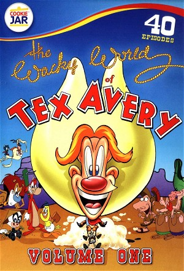

The Wacky World Of Tex Avery (1997)
AnimationChildrenComedyFamily
| Year | 1997 |
|---|---|
| Rating | 6 |
| Status | Completed |
| Seasons | 1 |
| Genre | Animation, Children, Comedy, Family |
The magic of classic animation returns in this all new series of animated cartoon shorts starring the next generation of classic cartoon characters in wild "squash & stretch"-style, and 4th wall breaking antics! These belly-laugh-funny short segments each star a different member of a wild family of original characters including the bumbling Roman centurion, "Pompeii Pete," the inept conqueror and the little princess he cannot conquer ("Genghis and Khannie,") the lamest super hero on 4 legs ("Power Pooch"), the world's first inventor ("Einstone"), the ultra pesky "Freddie the Fly" and of course, wackiest hero in the old West, "Tex Avery" himself. An homage to the brilliant, hilarious and great.
Episodes
Season 1
No episodes found.